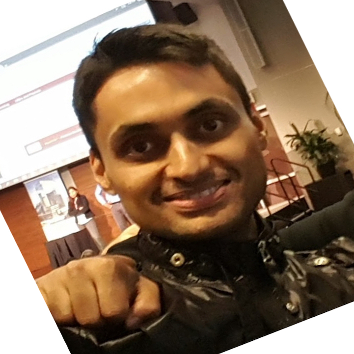

33 Orchard View Blvd, Toronto, Ontario | suraj.srinivas@gmail.com | 647.994.7099
BE, MBA
Completed undergraduate degree in Computer Engineering and MBA from Rotman School of Management, University of Toronto. Prior to working in Toronto, worked in US, China and India for over seven years and managed several large scale projects, and gained extensive exposure to leading project delivery teams. Held several progressive roles in Development, QA, Tech Consulting and Project Management. Got recruited in CIBC from campus through the Technology Leadership Associate Program; worked in consulting roles at Business Banking Technology, Distribution Technology, Enterprise Architecture and as a Project Manager at TO.
Passionate about Tennis, Beach Volleyball and Cricket and also crazy about console gaming.
Senior Mgr, Enterprise Architecture, CIBC, Toronto
April 2015 - Current
Senior Project Manager, Technology Operations, CIBC, Toronto
April 2015 - Poori
Business Consultant (TLAP), Enterprise Architecture, CIBC, Toronto
yadada
Excepteur sint occaecat cupidatat non proident, sunt in culpa qui officia deserunt mollit anim id est laborum.